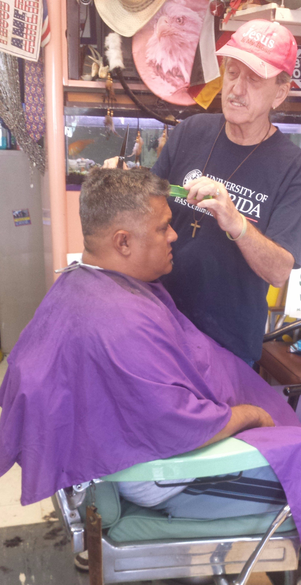

About Great Cuts

About John
John, owner of Great Cuts by John, began working in the barbershop on board the C.V.A-31 U.S.S. Bonne Home Richard, during the summer of 1996 at the ripe age of 18. “Working there gave me the very best possible work experience in cutting men’s hair. There was one barber for the officers, one for the chiefs and seven for the ship’s crew of 2,500 enlisted men. Out of the 2,500 enlisted men, the rough numbers were 500 Asian American, 500 African American, 500 Latin American and 1,000 Caucasian American. Business was brisk in the enlisted men’s barbershop. Every barber had a clipboard hanging on the wall at his station where you would sign up for a 15 minute appointment, up to two weeks in advance. This translated into a solid 32 hair cut day. The true number of haircuts was more like 50 a day, as many sailors came in for a cut between the appointment cuts. All seven barbers did it all - red, yellow, black and white hair.” “Yet the laws of our fair land dictated me to go to Barber School for a year to get my license when I was out of the Navy. Suffice it to say, the haircutting experience is ample for any type of hair and haircut for men, women and children - even the occasional dog.” “Every Veteran’s Day week I enjoy giving free haircuts to my favorite people group, the best in our country, the American Veteran. Back in 1992 I started going to the Bruce W. Carter Miami Veteran’s Hospital to cut hair once a week. It’s not about money, but serving our nation’s finest asset. Four months after starting at the hospital I received a letter from the Department of Veterans Affairs, Washington D.C., stating that everyone under their authority was to stop using razors immediately. This was all inclusive - no face shaves, razor tapes - nothing! The main reason was to help stop the spread of disease. So I stopped at the hospital. We used to give a full face shave, shave around the ears and neck, and razor tapes. Two months after stopping razor work at the hospital I stopped here at Great Cuts as the logic for stopping was solid.” The Great Cuts Barbershop offers the everyday starting price of $5.00 for a basic regular men’s or boy’s haircut. Absolutely no razor work is done under any circumstance. So if you are in need of a haircut, stop on by for a cup of hot coffee, good conversation and a great cut at a great price!